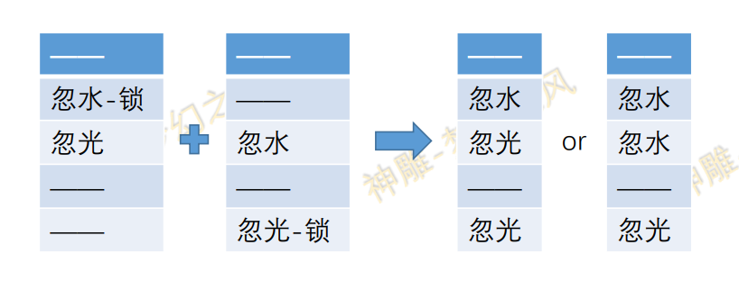
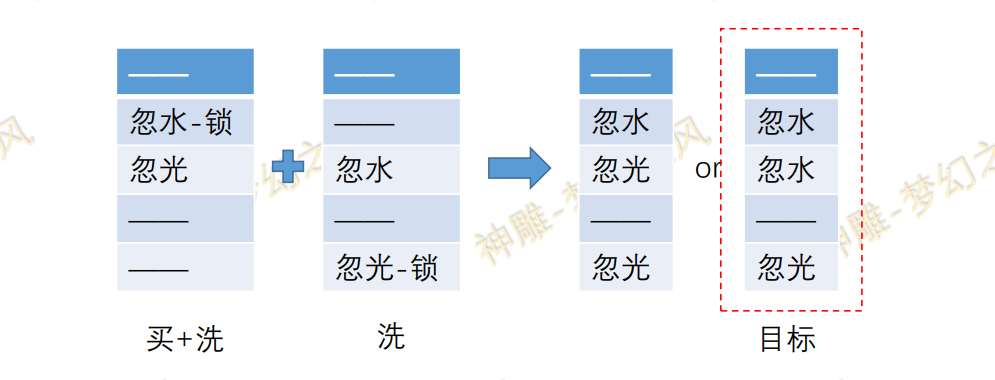
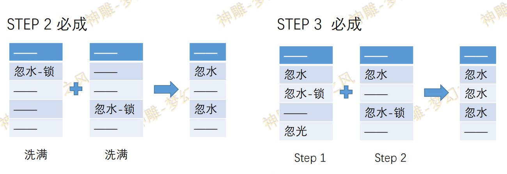
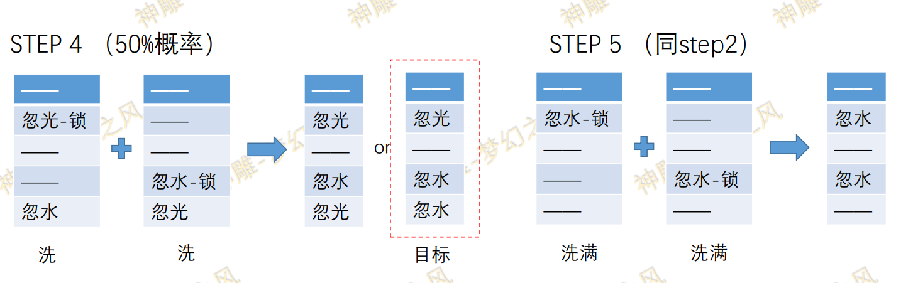
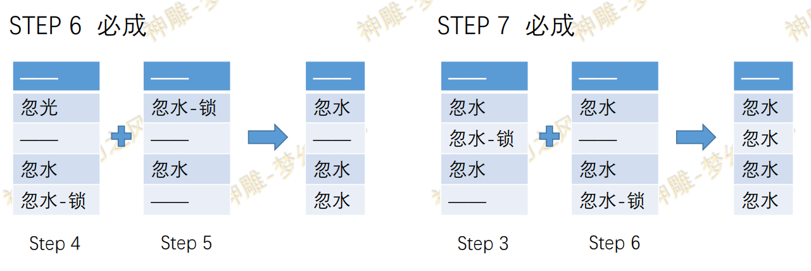
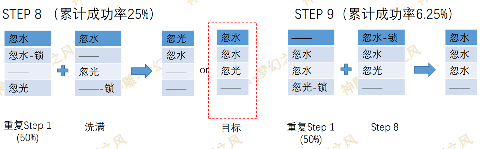
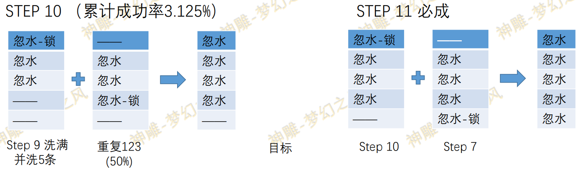

零基础学会打造五忽视
作者：[神雕-梦幻之风]
本文给出5忽视的打造方法，并且计算了可见的熔炼成本以及提供了节约瓶 子的方法，目录如下：
- P2 前言（必看 首看！）
- P3-4 三忽视
- P5-6 四忽视
- P7-8 五忽视
通篇必看：固定位双忽视合成方法及原理
系统在设计背饰之初，就暗暗对熔炼功能设置了固定位不能出现双忽视和双抗性的设定，这就是许多玩家拿 两件不同位置的忽视背饰，却合不出固定双忽视的原因，但是这条设定也有破解之处，案例如下：

通过这种方法，系统不得不从第三条中选取忽视光或者忽视水作为最终词条，因此就有了后续两种情况（双 忽视水）或者（双忽视光）。因此我们可以借助这个技巧，以50%的概率得到固定位双忽视的背饰
Tip
注：同理也可以用卡抗性的方式实现 双忽视、双抗性
STEP 1 固定位双忽视（50%成）
由此正式进入五忽视打造流程，合成一共16步，以下以忽视水为例，进行图解
Warning
提醒：即便是只打造3忽视 4忽视，也建议大家的主装备洗成5条，以免未来想打造5忽视，却因此没了操作空 间

买+洗：需要买一个具有如此条件的背饰，并将目标忽视的数值洗满，或者直接买数值满的背饰（137 洗满
10点，150 洗满12点）
洗：直接买一个固定位有忽视的背饰，将其洗出5条，满忽水数值，并且4、5位有其他忽视or抗性
制作三忽视

成本
5400（欧皇）-7200玉（期望成本）
节约瓶子的方法：前两步的4个胚子都可以在易市蹲

制作四忽视

成本：
12600（欧皇）-16200（期望成本）
节约瓶子的方法：
- 蹲一个step4 右侧成品胚子，然后再买对应的左胚子洗
- step 5的材料可蹲
5忽视成本骤升，请谨慎考虑（老板忽略此条）

如果重复step1时，运气好得到step 8的目标，可省略此步
制作五忽视

成本：
28800（欧皇）-75600（期望成本）
节约瓶子的方法： 类似123步，材料都可蹲